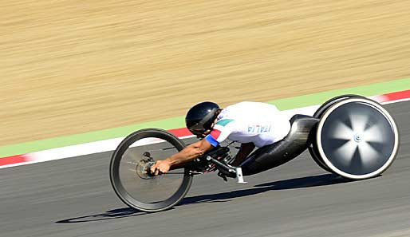
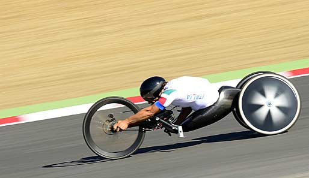

gli sport in comune tra paralimpiadi e olimpiadi...
- atletica leggera
- nuoto
- ciclismo
- equitazione
- tiro con l'arco
- tennis
- tennistavolo
- tiro a segno
esistono anche degli sport solo paralimpici o olimpici
il simbolo paralimpico e olimpico
 
href="https://www.olympics.com/it/notizie/tennis-jannik-sinner-halle-2025-quando-gioca-programma-dove-vedere"
target="-blank

href="https://www.olympics.com/it/notizie/tennis-jannik-sinner-halle-2025-quando-gioca-programma-dove-vedere"
target="-blank


gli sport in comune tra paralimpiadi e olimpiadi...
esistono anche degli sport solo paralimpici o olimpici
il simbolo paralimpico e olimpico